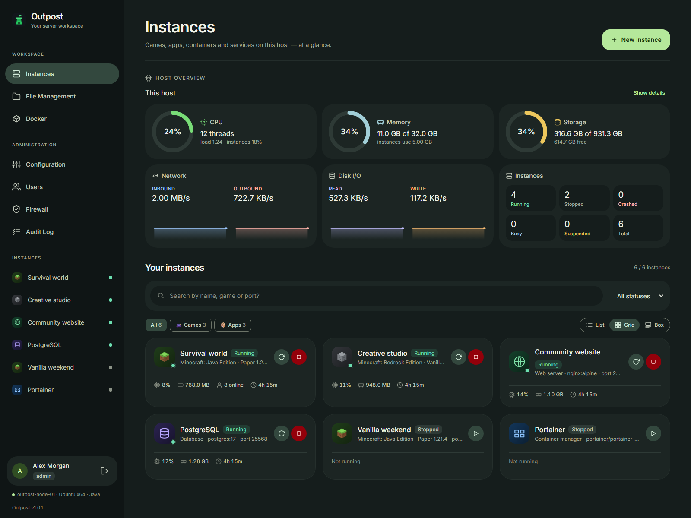
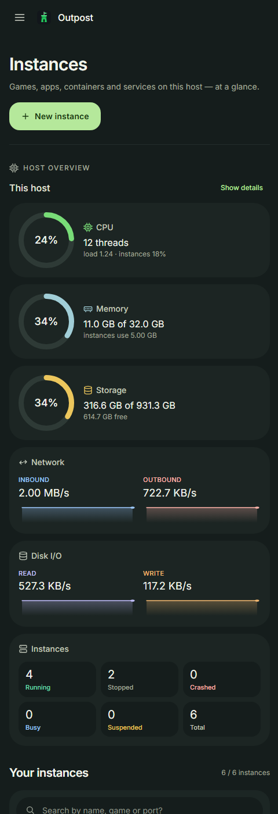

Choose what you want to run
Install Minecraft or Steam dedicated servers, launch an app from the catalog, use a Docker or Podman image, or configure a custom process. Set ports, environment variables and resource limits for each instance.
Spin up Minecraft and Steam game servers, one-click web apps, Portainer, any Docker or Podman image and your own scripts — each one sandboxed, metered and shareable, all from your browser.

A HOME FOR YOUR SELF-HOSTED STACK
Outpost brings games, services and the tools to run them into one workspace. Start on a single machine, give others access to the instances they need, and connect more Outpost hosts as your setup grows.
Install Minecraft or Steam dedicated servers, launch an app from the catalog, use a Docker or Podman image, or configure a custom process. Set ports, environment variables and resource limits for each instance.
Check CPU, memory, storage, network and disk activity alongside instance status. Search by name, game or port, filter by category or running state, and switch between list, grid and box views.
Follow live consoles, manage files, schedule restarts and snapshots, and configure off-site backups. Use roles, per-instance permissions, two-factor sign-in and audit history when sharing the panel.
BUILT TO RUN ON YOUR HARDWARE
The React and TypeScript frontend talks to a Node.js backend, with built-in SQLite for panel data. Container workloads use Docker or Podman; game servers use the runtime their platform needs.
A CLOSER LOOK
Soft tonal surfaces, grouped navigation and prominent actions keep host health and instance controls within reach. The dashboard adapts from a desktop workspace to stacked cards and a navigation drawer on mobile.

Actual Outpost UI captures from the project documentation, with illustrative host metrics and sample instances. Select an image to view it full size. Screenshots show the default theme; explore all five themes in the interactive demo below.
Click around a simulated Outpost. You can start and stop servers, type in the live console, op and kick players, take a snapshot, crash a server to watch it auto-restart, or create a new instance. Everything runs in your browser. Nothing is installed and nothing leaves this page.
The Material Design 3 Expressive-inspired dashboard brings host health, searchable instances, category and status filters, and list, grid and box layouts together. Grouped navigation separates workspace tools from administration. See the updated interface ?
Every CS2 server now has its own tab, with game modes, surf and bhop presets, a Workshop map library, bots, an admin setup flow and one-click Metamod and CounterStrikeSharp plugins. See what's in it →
The UI uses far less CPU and GPU while it's open. Polling pauses in background tabs, console updates arrive in batches, and a Reduce effects switch turns off animation and blur.
Most panels do one thing: a Minecraft host, a container UI, a game-server manager. Outpost puts all of it behind one sign-in — and keeps every instance boxed into its own folder.
Game servers, web apps, databases, Portainer, any container image and your own scripts live side by side — with Games · Apps · Containers · Custom filters and an Open web UI button for anything that has one.
Each game process runs in a bubblewrap sandbox that can only write to its own folder. File access never follows a symlink out, uploads can't escape, and instances never inherit the panel's secrets.
SQLite comes from node:sqlite; hashing and session tokens from node:crypto. No compiler toolchain and no external database: npm run setup, build, start.
Hand a friend one server, not the whole box. You get roles, per-instance permissions, creation quotas and memory caps, and the API enforces all of them, not just the UI.
Auto-restart on crash, nightly restarts with an in-game warning, automatic game updates, scheduled snapshots copied off-site, and Discord or webhook alerts when something stops or fails.
Linux, Windows or macOS, on a home server, a VPS or your desktop. Use Docker or rootless Podman, and link several Outpost hosts so you can move instances between them.
Renting game servers costs you every month. Big panel stacks ask you to run a web server, a database and a separate daemon. Single-game tools stop at one game. Outpost is one app on your own machine that runs all of it.
install.sh sets up everything, and update.sh test-starts a new build before it touches your live service.| Feature | Rented game-server host | Full panel stack | Minecraft-only panel | Outpost |
|---|---|---|---|---|
| Ongoing cost | Monthly, per server | Your hardware | Your hardware | Your hardware, no subscription |
| Your data stays with you | On the host's machines | Yes | Yes | Yes, and exportable as one zip |
| What you install | Nothing | Panel, web server, database and node daemon | Usually one app | One Node.js app; SQLite built in |
| Needs Docker | — | Usually | Usually not | Optional; native processes are sandboxed |
| Games | Per plan | Many, through templates | One game | Vanilla to modded Minecraft, 20+ Steam titles, any App ID |
| Windows-only servers on Linux | — | With Wine-based templates | No | Built-in Wine, per-instance prefix and winetricks |
| Web apps, databases & containers | Rarely | With custom templates | No | App catalog, Portainer, any image |
| Share one server, not the box | Sub-users on your plan | Yes | Varies | Per-instance permissions, quotas, memory caps |
| Steam Workshop mods | Some games | Per template | No | Zomboid, Garry's Mod, ARK, Arma 3, Black Ops III, CS2 maps |
| Restore one file from a backup | Often a paid add-on | Whole backups | Varies | Line-by-line diff, then restore one file |
| Router port forwarding | — | Done by hand | Done by hand | UPnP from the panel, with an internet test |
| Host OS | — | Mostly Linux | Varies | Linux, Windows, macOS |
strong fit · partly / depends · weak fit. Columns describe what's typical of each kind of tool. Individual products vary, so check the one you're using.
Outpost runs on hardware you provide, so you're responsible for keeping that machine online. If you don't have a spare machine, need a DDoS-protected network, or want someone else on call when the server goes down at 3 a.m., renting is the simpler choice. Outpost works best when you already have a box and want full control of it.
Everything below ships in Outpost today. Items tagged New landed in the last few days.
Pick a platform and version from the live catalog and Outpost downloads and installs it. Spigot is built from source with BuildTools.
Fabric, Quilt, Forge, NeoForge, Mohist and SpongeForge, or a whole Modrinth .mrpack modpack with its exact loader version. Updates keep your mods in place.
Windows-only servers like Black Ops III run through Wine. Each instance gets its own prefix in its folder, and a Wine tab sets the Windows version, DLL overrides, winetricks dependencies and a virtual screen.
Every Minecraft version starts with the Java it needs, from 8 to 21 and newer. Install Eclipse Temurin in one click, or pin a version per instance.
Choose the exact binary or jar, arguments, env vars, ready-detection and stop/restart behaviour for each instance.
Run any Linux binary or shell script with {{PORT}}-style variables and process-group shutdown.
Run any image in a container that only sees its own folder, with presets for popular game images.
One-click installs from Modrinth and CurseForge that match your loader and Minecraft version: plugins, mods, data packs and Bedrock add-ons. You can also upload BepInEx and .pak mods.
Paste item or collection links for Project Zomboid, Garry's Mod, ARK, Arma 3 or Black Ops III. Outpost checks each item with Steam, installs it the way that game expects, and lets you reorder the load order.
One-click Metamod and CounterStrikeSharp, a plugin catalog, installs from any GitHub link, and a switch back to vanilla when a CS2 update breaks things. More →
Scheduled restore points for Minecraft worlds, Java and Bedrock, plus level.dat rollback.
Real-time output over WebSocket, command history (↑/↓) and streamed install and update progress.
Source RCON for Source games, Minecraft, ARK and Palworld, and WebRCON for Rust. Outpost switches it on in the game, generates the password, and can send the console, player actions and stops over RCON.
Every console line is saved per day and compressed. You can search, download or delete a day's log, with a retention setting (30 days by default).
Outpost checks Steam builds, Paper and Purpur builds and Bedrock releases on a schedule. When there's an update, it warns players in-game, snapshots, updates and restarts. You can also choose to only get notified.
Host gauges and throughput on the dashboard; per-instance CPU, RAM, network, disk I/O and uptime.
Op, kick, ban, whitelist, broadcasts, time, weather and difficulty, all from one page.
Bring an instance back when it crashes, or whenever it stops, with a delay and an optional attempt limit.
Restart nightly with an in-game warning first, send console commands, or start and stop instances on a cron schedule.
Get told when an instance starts, stops or crashes, when a scheduled snapshot or task fails, or when a disk limit is reached.
Take them manually or on a schedule, with retention. Restore everything, or diff one file against the live copy and restore just that file.
Every snapshot is copied to AWS S3, Backblaze B2, Wasabi, Cloudflare R2, any S3-compatible storage, or another machine over SFTP, keeping the newest copies per instance.
One-click MySQL or MariaDB databases for plugins. Each gets its own user that can only reach it, and Outpost shows the JDBC URL and can rotate the password.
Export any instance as a template, with passwords and tokens stripped. Then create new servers from it, filling in variables like {{MOTD}} as you go.
Export or import the whole install as one zip, update servers in place without losing worlds, and factory-reset behind three confirmations.
Per-user SFTP logins scoped to one instance, with the same read or write rights as in the panel. SFTP has its own password, so it can't sidestep 2FA. SSH keys work too.
Personal keys for scripts, bots and Discord integrations. A key acts as its owner, can be read-only or expire, and is stored only as a hash.
CPU, memory, process and disk caps for every instance. On Linux the kernel enforces them, and containers get the same values as Docker/Podman limits.
Authenticator-app codes with recovery codes, plus an audit log of who did what, with IP and device, retention and CSV export.
Open and close ports through UFW or firewalld. SSH and the panel itself can't be cut off by accident.
Stop and lock an instance (for non-payment or a TOS breach). Its owners lose panel and API access until you lift it.
An unguessable link showing whether a server is up, its address and who's playing, plus an SVG badge for your website or Discord. No sign-in needed.
Forward ports and ranges on your router from the panel, then test the forward step by step, including from the internet.
Link other Outpost hosts and transfer an instance's files and settings between them.
Far less CPU and GPU while the panel is open. Polling pauses in background tabs, and a Reduce effects switch turns off animation and blur.
Español, Deutsch, Français and Português (Brasil) cover navigation, the dashboard and common screens, with more on the way.
The corner shows the version and commit you're running. When newer commits land, admins see what changed and a reminder to run ./update.sh.
Click New instance and pick one of five types:
Every template is a starting point. You can change the image, ports, environment, folders and limits before or after you create it.
| Game | Mods | Port |
|---|---|---|
| ⛏️ Minecraft Java — Paper · Purpur · Spigot · Vanilla | Plugins, data packs | 25565/tcp |
| 🧵 Minecraft Java — Fabric · Quilt · Forge · NeoForge · Mohist · SpongeForge New | Mods (+ plugins on Mohist / Sponge) | 25565/tcp |
📦 Modrinth modpacks (.mrpack) New | The pack's mods and configs | 25565/tcp |
| 🪨 Minecraft Bedrock | .mcpack / .mcaddon | 19132/udp |
| 🔫 Counter-Strike 2 New tab | Metamod + CounterStrikeSharp, Workshop maps | 27015/udp |
| 🔫 CS:GO, Source, 1.6 · 🎩 TF2 · ⚡ Quake | — | 27015/udp |
| 🛠️ Garry's Mod | Workshop addons & collections | 27015/udp |
| 🦖 ARK: Survival Evolved | Workshop mods (load order) | 7777/udp |
| 🪖 Arma 3 New | Workshop mods + keys | 2302/udp |
| 🔫 Call of Duty: Black Ops III, via Wine on Linux New | Workshop maps & mods | 27017/udp |
| 🧟 Project Zomboid | Workshop items, written into its .ini | 16261/udp |
| 🪖 Valheim | BepInEx | 2456/udp |
| 🐾 Palworld | .pak mods | 8211/udp |
| 🏝️ Rust, 7 Days to Die, Satisfactory, Unturned · 🌳 Terraria | — | game default |
| 🎯 Any Steam App ID, Windows-only ones too | — | your choice |
Every CS2 instance gets its own CS2 tab. Settings are written to the server's config and launch command, so they apply on the next start, or straight away with Apply now.
rcon_password, exec and quit are refused.All server-side, so players install nothing.
gameinfo.gi before every start, because CS2 updates replace that file.When a CS2 update breaks plugins: Switch to vanilla starts CS2 with no plugins at all, without deleting anything, and Turn plugins on puts them back. Outpost also refuses SwiftlyS2 plugins, which can't load in CounterStrikeSharp, and flags any that are already installed.
Material 3 dark by default, or go retro. Each theme restyles every card, button and dialog and comes with its own animated wallpaper. Admins can give each account its own theme. Try them here, since this whole page uses the same themes:
On Debian/Ubuntu, Arch or Fedora, install.sh does everything for you. It installs
Node.js, Java, the bubblewrap sandbox, a container engine and ICU (needed by CS2 plugins), then builds
Outpost, runs a health check and optionally sets up outpost.service. It also offers Wine for
Windows-only servers; add --wine to install it without asking.
git clone https://github.com/niruxx/outpost Outpost && cd Outpost
./install.sh # asks as it goes (Docker by default)
./install.sh --engine=podman # rootless Podman — no root daemon
./install.sh --wine # also install Wine + winetricks
./install.sh -y # accept every defaultWorks on Linux, Windows and macOS. Install the prerequisites, then:
git clone https://github.com/niruxx/outpost Outpost && cd Outpost
npm run setup # 📦 install dependencies
npm run build # 🏗️ build API + UI
npm start # ▶️ http://localhost:8642| 🪟 Windows | 🐧 Debian/Ubuntu | 🍎 macOS | |
|---|---|---|---|
| Node.js 22.5+ | winget install OpenJS.NodeJS.LTS | NodeSource 22.x → apt install nodejs | brew install node |
| Java 21+ | winget install EclipseAdoptium.Temurin.21.JDK | apt install openjdk-21-jre-headless | brew install openjdk@21 |
| Git | winget install Git.Git | apt install git | brew install git |
Keep the panel running across reboots with pm2 on any OS. Outpost's README also covers systemd, a Windows service via NSSM and launchd on macOS.
npm install -g pm2 && npm run build
pm2 start npm --name outpost -- start
pm2 save && pm2 startup
update.sh backs up your data first, pulls, rebuilds and test-starts the new build
before it touches your live service. If the new build fails, you can roll back instantly.
You don't have to keep checking for updates: the panel looks every 6 hours (it never pulls on its own),
and admins see a banner listing what's new.
./update.sh # recommended
./update.sh --rollback # restore the previous commithttp://localhost:8642 and create the admin account../install.sh --wine../../file can't land outside the folder.no-new-privileges.Coming from MultiCraft? Outpost is the same project renamed. You can upgrade in place: the old names keep working, and nobody gets logged out.